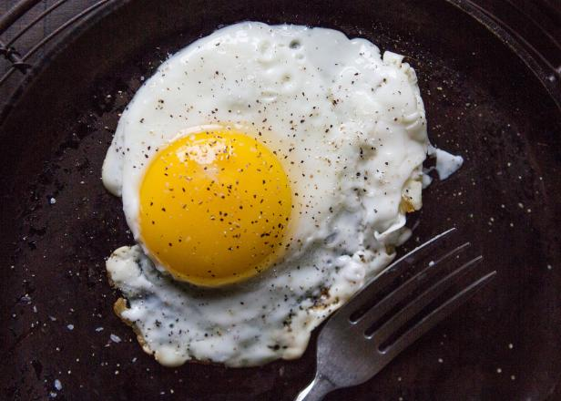

Easy Egg Bulls eye

The quickest breakfast recipe!
Fried eggs- bulls eye is a very common recipe globally.A couple of minutes is all it takes for preparation.
Making it one of the quickest breakfast recipes
Ingredients
- Egg-1
- Salt-a pinch
- Pepper-a pinch
- Oil=1/2 tablespoon
Steps
- Heat a non stick pan and add oil.
- Crack the egg without breaking the yolk. Pour this egg into the pan.
- Cook the egg for 3 minutes.
- Sprinkle salt and pepper.
- Yummy bulls eye is ready to be served.